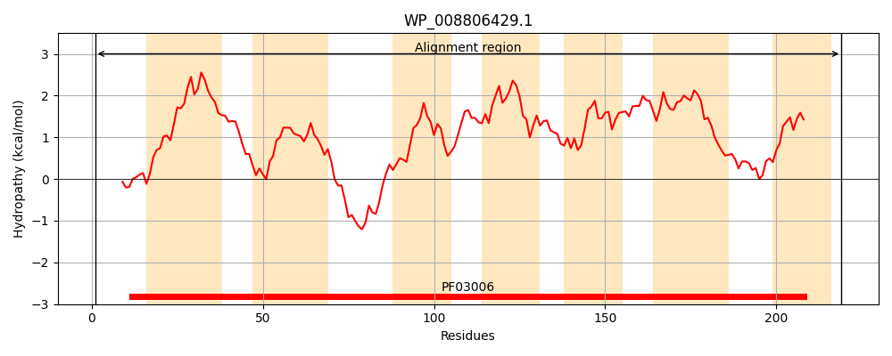
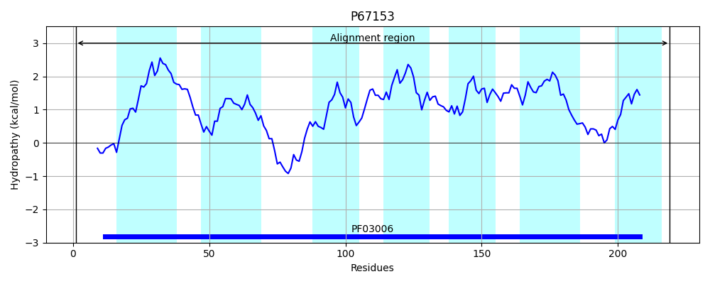
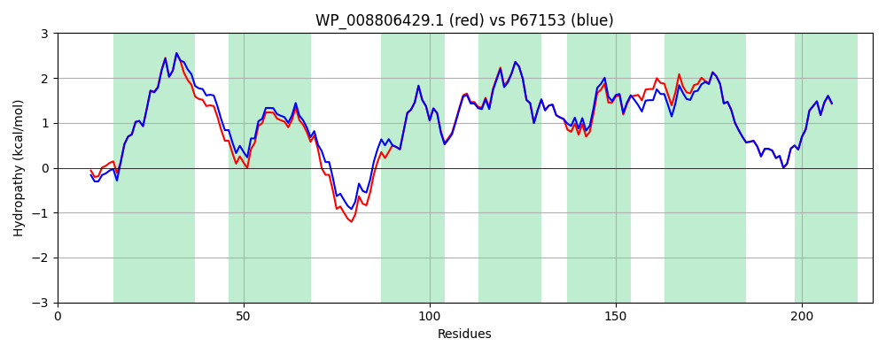

Hit Accession: P67153
Hit TCID: 1.C.113.1.10
Hit Description: gnl|BL_ORD_ID|11236 gnl|TC-DB|P67153|1.C.113.1.10 UPF0073 inner membrane protein YqfA OS=Escherichia coli (strain K12) GN=yqfA PE=1 SV=1
Mach Len: 219
e:0.000000
Query TMS Count : 7
Hit TMS Count: 7
TMS-Overlap Score: 7.050000
Predicted Substrates:CHEBI:34768;furfural
BLAST Alignment:
Score: 1054 , Bit scores: 410 bits, E-value: 3.9e-148, Alignment length: 219, Percentage identity: 92
Query: 1 MVRKPLITQGYSLAEEVANSISHGIGLVFGIVGLVLLLVQAVDTNASATAITSYSLYGGSMIMLFLASTLYHAIPHQRAKQWLKKFDHCAIYLLIAGTYTPFLLVGLNSPLAKGLMIVIWSLALLGILFKLTIAHRFKILSLVTYLTMGWLSLIVVYQLAVKLAVGGVTLLAVGGVVYSLGVIFYVCKRIPYNHAIWHGFVLGGSVCHFLAIYLYVGQS 219
MV+KPLI QGYSLAEE+ANS+SHGIGLVFGIVGLVLLLVQAVD NASATAITSYSLYGGSMI+LFLASTLYHAIPHQRAK WLKKFDHCAIYLLIAGTYTPFLLVGL+SPLA+GLMIVIWSLALLGILFKLTIAHRFKILSLVTYL MGWLSL+V+Y++AVKLA G VTLLAVGGVVYSLGVIFYVCKRIPYNHAIWHGFVLGGSVCHFLAIYLY+GQ+
Sbjct: 1 MVQKPLIKQGYSLAEEIANSVSHGIGLVFGIVGLVLLLVQAVDLNASATAITSYSLYGGSMILLFLASTLYHAIPHQRAKMWLKKFDHCAIYLLIAGTYTPFLLVGLDSPLARGLMIVIWSLALLGILFKLTIAHRFKILSLVTYLAMGWLSLVVIYEMAVKLAAGSVTLLAVGGVVYSLGVIFYVCKRIPYNHAIWHGFVLGGSVCHFLAIYLYIGQA 219 | Protein Hydropathy Plots: |
|---|
|  |  |
Pairwise Alignment-Hydropathy Plot:
|
|---|
|  |